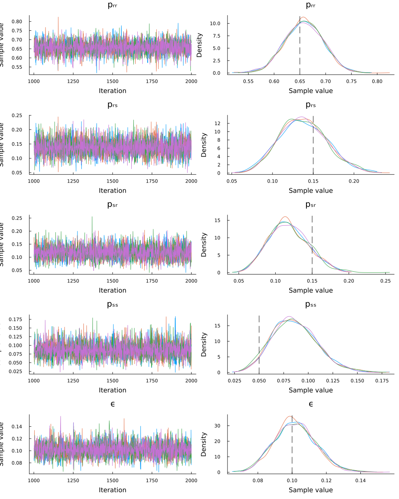

Bayesian Parameter Estimation
The purpose of this tutorial is to demonstrate how to perform Bayesian parameter estimation of the True and Error model (Birnbaum & Quispe-Torreblanca, 2018) using the Turing.jl package.
Load Packages
The first step is to load the required packages. You will need to install each package in your local environment in order to run the code locally. We will also set a random number generator so that the results are reproducible.
using Turing
using TrueAndErrorModels
using Random
using StatsPlots
Random.seed!(25044)Generate Data
# Generate some data with known parameters
dist = TrueErrorModel(; p = [0.65, .15, .15, .05], ϵ = fill(.10, 4))
data = rand(dist, 200)16-element Vector{Int64}:
87
11
13
1
13
18
0
3
10
2
18
1
4
5
2
12The rand() function will sample random draws from the distribution, and store that into a named tuple of 2 vectors (one for choice and one for rt). The individual vectors can be accessed by their names using data.choice and data.rt.
Specify Turing Model
The code snippet below defines a model in Turing. The model function accepts a tuple containing a vector of choices and a vector of reaction times. The sampling statements define the prior distributions for each parameter. The non-decision time parameter $\tau$ must be founded by the minimum reaction time, min_rt. The last sampling statement defines the likelihood of the data given the sampled parameter values.
@model function model(data)
p ~ Dirichlet(fill(1, 4))
ϵ ~ filldist(Uniform(0, .5), 4)
data ~ TrueErrorModel(p, ϵ)
endEstimate the Parameters
Finally, we perform parameter estimation with sample(), which takes the model, and details about the sampling algorithm:
model(data): the Turing model with data passedNUTS(1000, .65): a sampler object for the No U-Turn Sampler for 1000 warmup samples.MCMCThreads(): instructs Turing to run each chain on a separate threadn_iterations: the number of iterations performed after warmupn_chains: the number of chains
# Estimate parameters
chains = sample(model(data), NUTS(1000, .65), MCMCThreads(), 1000, 4)name_map = Dict(
"p[1]" => "pᵣᵣ",
"p[2]" => "pᵣₛ",
"p[3]" => "pₛᵣ",
"p[4]" => "pₛₛ",
"ϵ[1]" => "ϵᵣₛ₁",
"ϵ[2]" => "ϵᵣₛ₂",
"ϵ[3]" => "ϵₛᵣ₁",
"ϵ[4]" => "ϵₛᵣ₂",
)
chains = replacenames(chains, name_map)Chains MCMC chain (1000×20×4 Array{Float64, 3}):
Iterations = 1001:1:2000
Number of chains = 4
Samples per chain = 1000
Wall duration = 2.11 seconds
Compute duration = 6.21 seconds
parameters = p[1], p[2], p[3], p[4], ϵ[1], ϵ[2], ϵ[3], ϵ[4]
internals = lp, n_steps, is_accept, acceptance_rate, log_density, hamiltonian_energy, hamiltonian_energy_error, max_hamiltonian_energy_error, tree_depth, numerical_error, step_size, nom_step_size
Summary Statistics
parameters mean std mcse ess_bulk ess_tail rhat ess_per_sec
Symbol Float64 Float64 Float64 Float64 Float64 Float64 Float64
pᵣᵣ 0.5809 0.0809 0.0022 1457.7428 1950.9582 1.0015 44.6079
pᵣₛ 0.1352 0.0549 0.0015 1528.4144 1321.0865 1.0011 46.7705
pₛᵣ 0.1713 0.0598 0.0015 1593.3595 2335.4474 1.0037 48.7579
pₛₛ 0.1126 0.0374 0.0009 1875.5054 2164.3467 1.0006 57.3918
ϵᵣₛ₁ 0.0713 0.0382 0.0009 1668.8838 1615.1341 1.0032 51.0690
ϵᵣₛ₂ 0.0871 0.0344 0.0010 1274.9137 738.2457 1.0016 39.0132
ϵₛᵣ₁ 0.2325 0.1063 0.0026 1597.8772 1635.9023 1.0031 48.8961
ϵₛᵣ₂ 0.1287 0.0932 0.0025 1419.0534 1597.3096 1.0016 43.4240
Quantiles
parameters 2.5% 25.0% 50.0% 75.0% 97.5%
Symbol Float64 Float64 Float64 Float64 Float64
pᵣᵣ 0.4166 0.5243 0.5850 0.6418 0.7202
pᵣₛ 0.0555 0.0967 0.1246 0.1635 0.2718
pₛᵣ 0.0757 0.1255 0.1660 0.2118 0.2973
pₛₛ 0.0514 0.0858 0.1087 0.1346 0.1960
ϵᵣₛ₁ 0.0052 0.0411 0.0707 0.0995 0.1413
ϵᵣₛ₂ 0.0107 0.0666 0.0912 0.1115 0.1452
ϵₛᵣ₁ 0.0275 0.1546 0.2385 0.3134 0.4227
ϵₛᵣ₂ 0.0047 0.0523 0.1085 0.1893 0.3348Posterior Summary
We can compute a description of the posterior distributions.
# Summarize posteriors
summarystats(chains)Summary Statistics
parameters mean std mcse ess_bulk ess_tail rhat ess_per_sec
Symbol Float64 Float64 Float64 Float64 Float64 Float64 Float64
pᵣᵣ 0.5809 0.0809 0.0022 1457.7428 1950.9582 1.0015 44.6079
pᵣₛ 0.1352 0.0549 0.0015 1528.4144 1321.0865 1.0011 46.7705
pₛᵣ 0.1713 0.0598 0.0015 1593.3595 2335.4474 1.0037 48.7579
pₛₛ 0.1126 0.0374 0.0009 1875.5054 2164.3467 1.0006 57.3918
ϵᵣₛ₁ 0.0713 0.0382 0.0009 1668.8838 1615.1341 1.0032 51.0690
ϵᵣₛ₂ 0.0871 0.0344 0.0010 1274.9137 738.2457 1.0016 39.0132
ϵₛᵣ₁ 0.2325 0.1063 0.0026 1597.8772 1635.9023 1.0031 48.8961
ϵₛᵣ₂ 0.1287 0.0932 0.0025 1419.0534 1597.3096 1.0016 43.4240As you can see, based on the mean values of the posterior distributions, the original parameters (ν=[3.0, 2.0], A = .8, k = .2, τ = .3) are successfully recovered from the data (the accuracy would increase with more data).
Evaluation
It is important to verify that the chains converged. We see that the chains converged according to $\hat{r} \leq 1.05$, and the trace plots below show that the chains look like "hairy caterpillars", which indicates the chains did not get stuck. As expected, the posterior distributions are close to the data generating parameter values.
plot(chains)
References
Birnbaum, M. H., & Quispe-Torreblanca, E. G. (2018). TEMAP2. R: True and error model analysis program in R. Judgment and Decision Making, 13(5), 428-440.